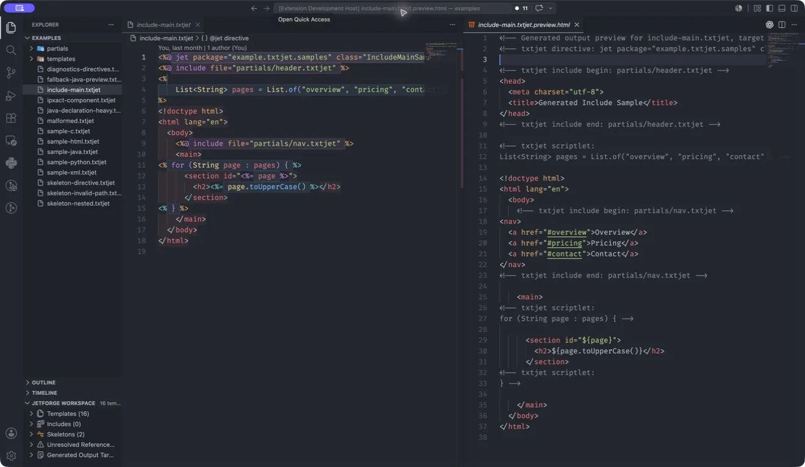

Tübingen, DE / --:--
Max Staneker
Max Staneker .
No. 16 London
System Architect Embedded devices & AI, Bosch SensortecB.Sc. Informatik University of Tübingen
Scroll
I write software close to hardware and sound — embedded systems, developer tools, real-time audio. Away from the keyboard I coach swimming , play piano and photograph cities, coastlines and long roads.

01 — VS Code extension
Editor tooling for TxtJet Java emitter templates: syntax highlighting, generated-output language modes, snippets, compiler diagnostics and source mapping. Runs locally.
Year 2026
Stack TypeScript, VS Code API
Open JetForge ↗
02 — Desktop app
Desktop software for coordinating repo-focused coding agents: local orchestration, task handoff between agents and explicit review steps.
Year 2026
Stack TypeScript
Open AetherCore ↗
Max Staneker, Tübingen
Experience
May 2026 — now System Architect Bosch Sensortec · Embedded devices & AI2023 — now Swim Coach Tübinger Schwimmverein · Beginner & youth group2022 Student Internship PARAVAN GmbH · Vehicle sensor technology
Education
2024 — 2027 B.Sc. Informatik University of Tübingen · expected graduation 20272016 — 2024 Abitur Kepler-Gymnasium Tübingen · German, Computer Science, Physics
Toolkit
Programming C/C++ / Java / TypeScript / Python / Swift
Tools React / JUCE & DSP / WebSocket / Git / SQL / Linux
Languages German C2 / English C1 / French B1 / Spanish B1
Interests Swimming / Piano / Music production / Photography
03
Photography
25 frames from London, the British coast, California and a personal series. Drag, swipe or use the arrow keys.
Drag or swipe horizontally, use the Left and Right Arrow keys, or use the gallery buttons. Home and End jump to the first and last photograph.
01 / 25
Personal series Photograph from a personal series, frame 1 of 10